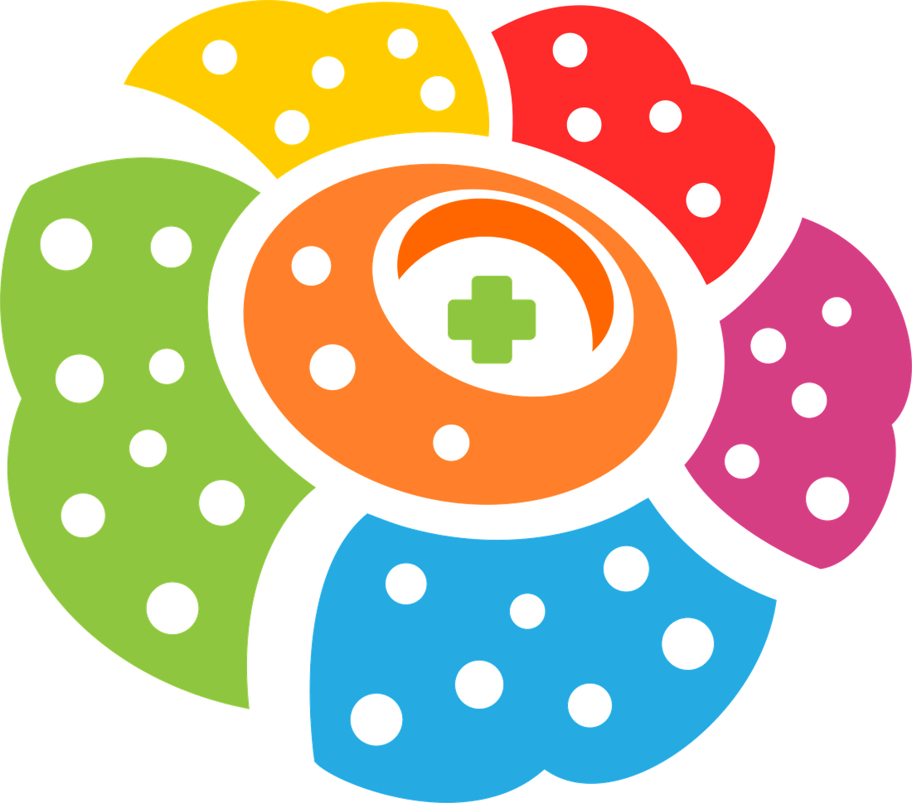

B-ICON 2026
The 6th Bengkulu International Conference on Health (B-ICON 2026). Theme: One Health in Action: Addressing Infectious Diseases and Emerging Health Threats. 27 to 29 October 2026. Health Workforce Competency Development Unit (UPKSDMK) Bengkulu, Poltekkes Kemenkes Bengkulu. Contact: biconhealth@poltekkesbengkulu.ac.id. This website needs JavaScript to display.